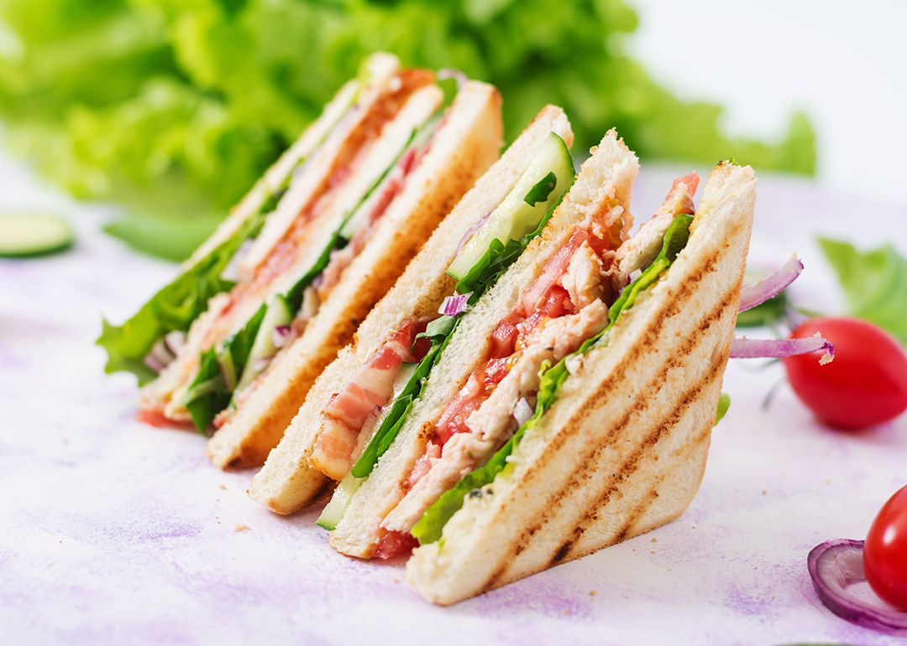

Sandwich Recipes

A sandwich is a quick meal that you
can make easily with
a variety of ingredients you have around your home.
Sandwiches usually consist of meat, cheese, vegetables,
and condiments in between 2 slices of bread. You can
experiment with different ingredients in your sandwich or
you can follow a recipe to make a well-known classic.
Once you make your sandwich, enjoy it hot or cold with
your favorite side!
ingredients:
- bread slices
- eggs
- cheese slices
- mayonnaise sauce
- salt
- black pepper
- mustard
- onion
- tomato
- cucumber
- avocado
- lettuce leaves
Steps you can follow to make a sandwich:
- Use butter with the help of a butter knife or the
flat back of a spoon and spread the butter on each
slice of bread
- Place the cheese slices or shredded cheese between
the two pieces of bread
- Inside the two slices of bread, place the chopped
veggies such as onion, tomato, avocado, cucumber, and
lettuce
- With the help of an adult, gently press the pieces
together, place the sandwich inside a sandwich machine,
or cook it on a pan, and then wait for the cheese to
melt. Make sure the pieces of bread wont burn
- Now add tomato ketchup and enjoy your food
- Sandwich is ready